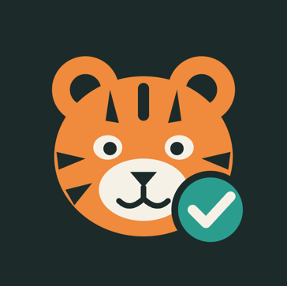

透析如虎口
ALWAYS CHECK LOOK CALL
首頁
居家照護指南
FAQ
AI 情境短劇
大家來找碴
快速求助
回饋與提問
Aa 大字模式
☰
YOUR VOICE MATTERS
回饋與
提問
你的每一個問題，都能幫助我們把衛教做得更清楚。
想告訴我們什麼？
歡迎分享網站使用心得、看不懂的地方，或希望新增的衛教主題。表單採匿名方式設計。
請勿填寫姓名、電話、身分證字號、病歷號、醫院病歷內容，或任何可識別個人的敏感醫療資訊。本表單不是醫療諮詢或緊急聯絡管道。
載入 Google 表單中…